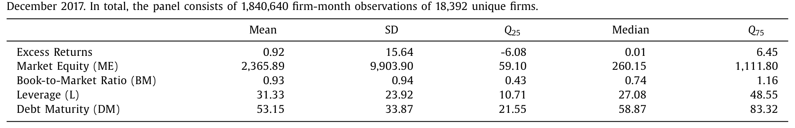
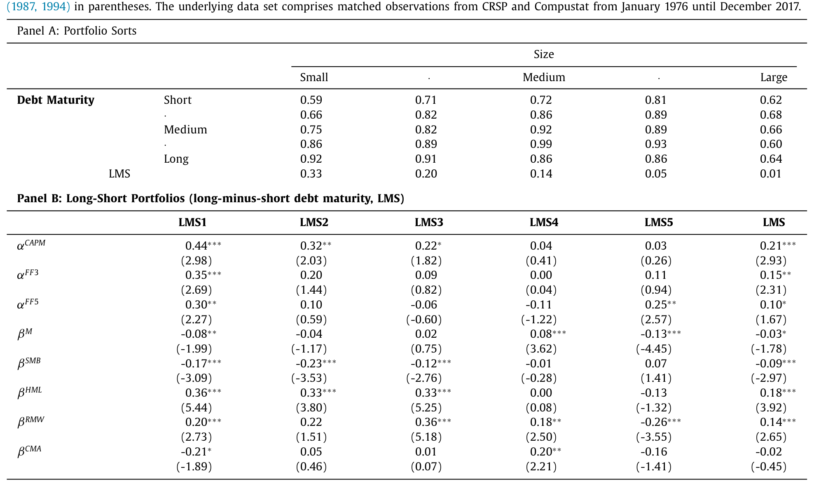
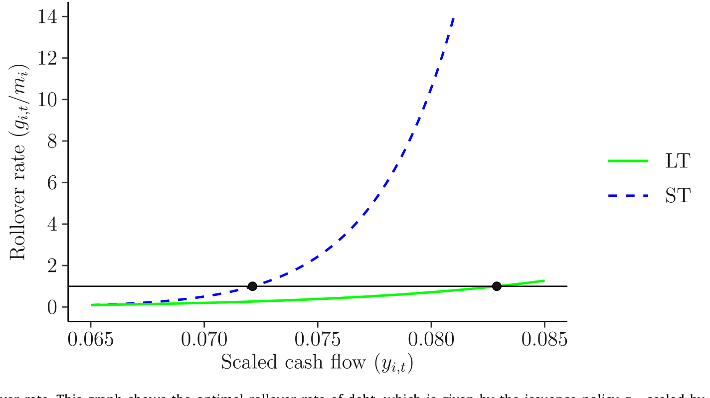
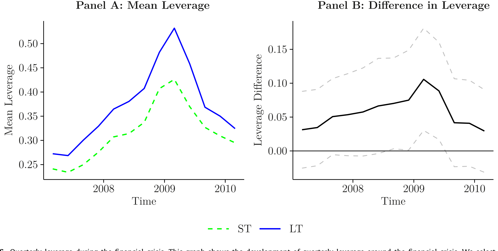
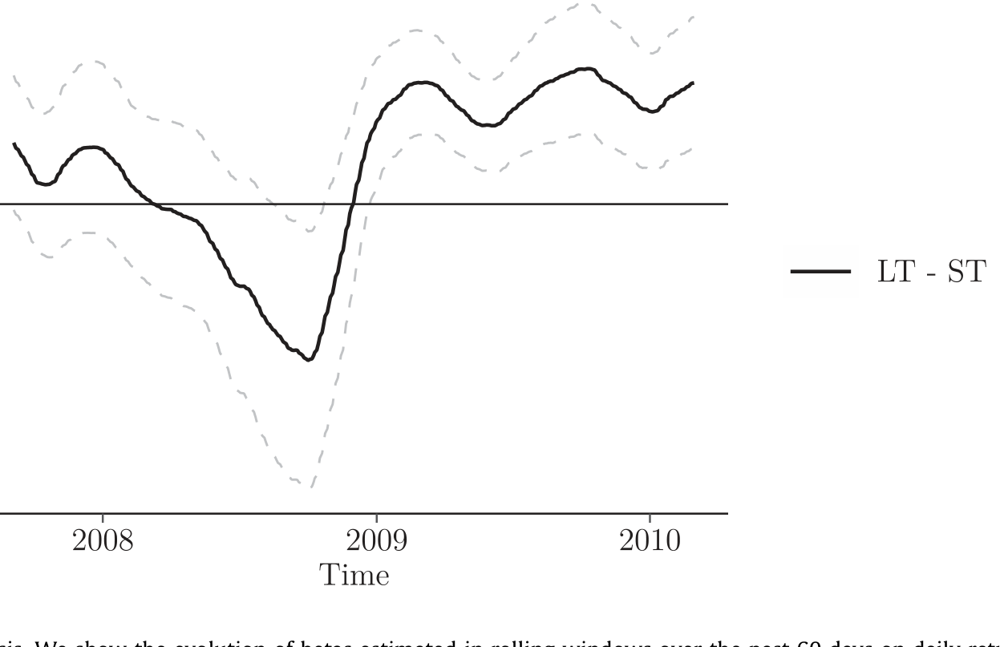
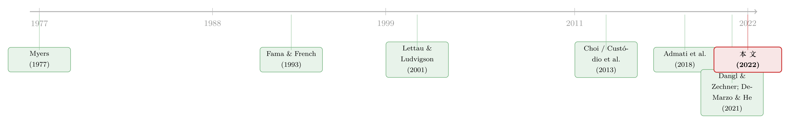

同一笔杠杆，凭什么「长债」的公司要多付 0.21%？
本文读的是 Chaderina, Weiss & Zechner (2022, Journal of Financial Economics)：用长期债务融资的公司，在横截面上挣到了一笔无法被无条件因子模型解释的风险溢价——大约 0.21% 每月。作者把它叫做「期限溢价」(maturity premium)，并用一个内嵌动态资本结构的条件 CAPM 把它讲圆了。
1 一个被忽略的维度
我们都知道杠杆会影响股票的风险。一家负债越重的公司，股东手里那份「剩余索取权」就越像一个深度价外的看涨期权，beta 越高，要求的回报也越高。这套逻辑在公司金融里几乎是常识。
但这里有一个被长期忽略的维度：同样的杠杆，债务的期限不同，风险会一样吗？
设想两家公司，今天的账面杠杆完全相同，资产风险也相同。区别只在于：一家的债大多是三个月、半年就要还的短债；另一家的债则是五年、七年以后才到期的长债。在「好天气」里，它们看上去毫无二致。可一旦经济进入衰退、企业盈利下滑，故事就分岔了——而正是这个分岔，决定了股东在事前愿意为这两家公司付多少钱。
这篇论文的核心，就是把这个分岔讲清楚，并且证明：它在数据里留下了一道可观测、可定价、量级堪比价值溢价的痕迹。
2 先看数据：长债公司确实更贵
作者没有先讲模型，而是先把事实摆出来。这也是我喜欢的顺序——先让数据说话。
他们的债务期限 (debt maturity, DM) 度量沿用 Custódio et al. (2013)：到期日在三年以上的债务，占总债务的比例。为什么是三年？因为这样可以把绝大多数信用额度 (credit line) 这类天然短期的债务剔除掉。样本是 1976 年 1 月到 2017 年 12 月的 CRSP/Compustat 合并面板，一共 1,840,640 个公司-月观测，18,392 家独立公司。
首先看一眼这群公司长什么样。

Table 1
平均而言，一家「代表性公司」有约一半的债是三年以上才到期的（DM 均值 53.15%），杠杆均值 31.33%。长债，在美国企业的融资里，绝不是一个边角料。
接着，一个自然的问题是：短债公司和长债公司，除了期限，还有什么系统性差别？ 作者把公司按 DM 排成五档（Table 2），结果耐人寻味——最短一档大约 95% 的债在三年内到期，最长一档则反过来；短债公司规模更小、杠杆更低 (23.89% vs 32.08%)、特质波动率更高 (IVOL 14.93% vs 11.25%)、现金更多、税率更低。但关键在于：两组的账面市值比 (book-to-market) 几乎一模一样（都在 0.93–0.98 之间），资产 beta (βU) 也相差无几。换句话说，资产端的系统性风险敞口是可比的——差别真的主要在负债的期限结构上。
那么回报呢？作者做了一个 5×5 的双重排序：先按规模分五档，再在每个规模档内按债务期限分条件五档，然后构造一个「买长债、卖短债」的多空组合（long-minus-short, LMS）。

Table 3
结论干净利落：长债公司平均每月跑赢短债公司 0.21%，且这是在控制了市场风险（CAPM beta）之后的差额。 这就是「期限溢价」。它没有被 Fama-French 三因子或五因子吃掉，统计上依然显著。它的量级有多大？作者拿同一样本里的价值溢价做参照——0.37% 每月。也就是说，期限溢价大约是价值溢价的一半多，绝非可以忽略的零头。在最小规模一档里，这个差额甚至达到 0.44% 每月。
还有一个细节值得记下：LMS 组合在 HML（价值因子）上有显著为正的载荷。换句话说，长债公司本身就偏「价值股」。这条线索，后面会把期限溢价和经典的价值溢价之争重新串起来。
3 机制：股东为什么不肯在坏天气里还债？
事实有了，接着真正关键的一步在于——为什么？为什么仅仅是债务期限的差别，就能在股票回报上撕开一道口子？
作者的答案，落在一个古老的概念上：债务积压 (debt overhang, Myers, 1977)。
设想衰退来临，公司盈利下滑。从「公司整体价值最大化」的角度看，此时减少杠杆、回购一部分债务，往往是好事——它能降低破产概率，提升企业价值。可问题是，回购债务这件事，受益的不只是股东。当公司主动注入新股本去回购债务时，剩余的债权人会因为违约概率下降而白白得益——这是一笔从股东到债权人的财富转移。理性的股东，是不会做这种「为别人买单」的事的。这正是 Admati et al. (2018) 所说的「杠杆棘轮效应」(leverage ratchet effect)：在缺乏事前承诺的情况下，股东永远不愿主动去杠杆。
但这里有一个巧妙的「逃生通道」：到期。
如果一部分债务自然到期了，股东可以选择「不滚动」(not roll over)——也就是不再借新还旧，让杠杆顺其自然地降下来。这不需要主动掏钱去回购，因而不构成那笔讨厌的财富转移。于是：
- 短债公司：滚动率高，每期都有大量债务到期。坏天气一来，股东顺势不续，杠杆迅速回落。债务积压的扭曲被「到期」这个机制大大缓解了。
- 长债公司：滚动率低，债务被「锁」在那里，短期内没什么到期可言。股东既不愿主动回购（财富转移），又没有「到期」这个台阶可下，于是杠杆长时间维持在高位。
这就是那个分岔的微观基础。Jungherr & Schott (2021) 从宏观角度也观察到了同一现象：长债公司在衰退里迟迟不去杠杆，拖累了总投资——但他们没有去问这件事的资产定价含义。这篇论文问了。

Figure 1: Optimal rollover rate. This graph shows the optimal rollover rate of debt, which is given by the issuance policy g i,t scaled by the maturit
4 模型：把「时变的风险价格」请进来
光有杠杆的动态还不够。杠杆高低本身只决定了 beta 的水平，而要产生一个无条件的 alpha，还差最后一块拼图——风险的价格 (market price of risk) 必须随商业周期变动。
作者在 Dangl and Zechner (2021) 和 DeMarzo and He (2020) 的动态权衡 (dynamic trade-off) 框架上，加进了一个时变的市场风险价格 \(\lambda_t\)。直觉很简单：投资者在衰退里更厌恶风险，对系统性风险的标价 \(\lambda_t\) 更高；在繁荣里则更低。这一点和 Campbell-Cochrane 的习惯形成、以及 Lettau and Ludvigson (2001) 的条件 CAPM 一脉相承。
在这个设定下，条件 CAPM 是成立的：
$$ \mathbb{E}_t[R_{i,t+1} - r_f] = \beta_{i,t}\,\lambda_t $$
也就是说，如果你能逐期观测到真实的 beta 和真实的风险价格，定价是干净的，没有 alpha。问题出在我们做实证时用的是无条件 CAPM——我们只控制了 beta 的平均水平 \(\mathbb{E}[\beta_{i,t}]\)，而把 beta 和风险价格之间的协动 (co-movement) 给忽略了。把条件 CAPM 在时间上取期望，就得到了这篇论文真正的「心脏」：
读懂了这个分解，整篇论文就通了。无条件 CAPM 的回归只能解释第一项 \(\mathbb{E}[\beta_{i,t}]\,\mathbb{E}[\lambda_t]\)；它把第二项 \(\mathrm{Cov}(\beta_{i,t}, \lambda_t)\) 当成了「alpha」。
于是反转出现了：长债公司恰恰是在 \(\lambda_t\) 高的时候（衰退里），beta 也最高的那类公司——因为它们的杠杆在坏天气里黏在高位，beta 随之高企；而此时投资者对风险的标价又最高。两者同向而行，\(\mathrm{Cov}(\beta_{i,t}, \lambda_t) > 0\)，而且很大。短债公司则相反，坏天气里它们迅速去杠杆，beta 回落，协方差小得多。
这笔被无条件 CAPM 漏算的协方差，就是期限溢价。作者把模型按数据里短/长债公司的真实特征（期限、特质风险、边际税率）做了校准，模拟出的多空组合无条件 alpha 是 0.19% 每月——与实证里的 0.21% 几乎严丝合缝。方向对了，量级也对了。
这里有一个容易被忽略的细节：短债公司在极短的视角下其实是「更危险」的——它们违约时的现金流水平更高，盈利骤降时 beta 会先窜起一个尖峰。Friewald et al. (2021) 研究的「滚动风险」(rollover risk) 正是这一面。但本文关心的是更长的持有期：尖峰过后，短债公司靠到期快速去杠杆，风险迅速消退；而长债公司的风险则「细水长流」地拖很久。两篇论文并不矛盾，而是同一枚硬币的两面。（关于短债的滚动风险溢价，可参见《同一笔杠杆，凭什么「快到期」的那半才向股东要溢价？》。）
5 把机制「抓现行」：金融危机这个天然实验
到这里，逻辑链已经闭合，但作者没有就此收手。一个聪明的怀疑者会问：你说的「长债公司 beta 在衰退里黏得久」，这只是模型推出来的，数据里真的看得见吗？
这是全文我最欣赏的一步。作者找了一个近乎外生的变异来源——金融危机的爆发时点。
想法是这样的：两家公司即便在发债时最优地选择了相同的期限，到了某个时间点，它们的剩余期限也可能不同，因为发债的日期不一样。一家五年前发了七年期债券，现在还剩两年到期；另一家一年前发了类似的债券，现在还剩六年。作者用 Capital IQ 数据，挑出那些通常使用 5–7 年期债务工具的公司，按它们在 2007 年底（危机前夜）的剩余期限分成三组。同样的最优期限选择，不同的剩余期限——这就把「期限」从公司的其他特征里干净地剥了出来。

Figure 6: Quarterly leverage during the financial crisis. This graph shows the development of quarterly leverage around the financial crisis. We selec

Figure 7: Beta during the financial crisis. We show the evolution of betas estimated in rolling windows over the past 60 days on daily returns. We sel
结果与模型预测高度一致：剩余期限短的公司，2008 年 beta 出现了更大的初始尖峰，但很快回落到危机前水平；剩余期限长的公司，市场杠杆和 beta 的初始上升更温和，却在高位停留了更久——到 2009 年，长期限公司的杠杆和 beta 依然高于短期限公司，并且这个差额还持续了好几年。
换句话说，那条「beta 与风险价格同向协动」的暗线，被这个准实验直接照了出来。作者还补了两项证据：（1）用整个样本期看，短债公司向历史平均杠杆调整得更快，长债公司的杠杆则「黏」着不动（这与 Frank and Shen, 2019 的超额杠杆度量一致）；（2）跟随 Boguth et al. (2011) 估出的条件 beta 显示，LMS 组合的 beta 确实和估出的市场风险价格正向同动，而条件 CAPM 的截距项不再显著——alpha 被「条件化」吸收掉了。
6 文献脉络
这条研究的来路，可以从两条河流的汇合处看起。
一条河是价值溢价的「杠杆解释」。Zhang (2005) 和 Cooper (2006) 用经营杠杆 (operating leverage) 的黏性解释价值股为何在危机里更危险；Lettau and Ludvigson (2001) 用条件 CAPM 指出价值股的 beta 在衰退里会大涨；Choi (2013) 则把财务杠杆抬了出来，说价值股更高的杠杆贡献了价值溢价。但这些工作都停在「杠杆水平」上。
另一条河是动态资本结构。从 Myers (1977) 的债务积压、Admati et al. (2018) 的杠杆棘轮，到 Dangl and Zechner (2021)、DeMarzo and He (2020) 把无承诺下的杠杆动态写成一个完整的动态权衡模型——这条线把「公司会怎样调整杠杆」讲透了，但没怎么碰资产定价。

这篇论文的位置，恰好在两河交汇处：它指出债务期限才是连接「杠杆动态」和「股权溢价」的那把钥匙。因为成长股借短债、价值股借长债（Barclay & Smith, 1995; Custódio et al., 2013），长债的黏性给了价值股的 beta 一个随周期变动的「凸形」，而这正是无条件 CAPM 抓不住、却被定价的那部分。它也顺带给「困境风险之谜」(distress risk puzzle) 提供了一个互补的理性解释——短债公司违约率更高却「看上去」跑输，恰是因为它们的 beta 与风险价格协动更弱（与 Chen, Hackbarth & Strebulaev, 2020 互补，参见《高 beta、低收益：困境股票里那根会「看天」的杠杆》）。而「时变 beta 被低估」这一主题，也呼应了《时变的 beta，被低估了二十年的风险》里的核心担忧。
7 评论与延伸（Q&A + 研究方向）
(a) 几个可能的疑问
Q：期限溢价会不会只是价值溢价换了个马甲？
不完全是。LMS 组合确实在
HML上正向载荷，说明长债公司偏价值。但期限溢价在控制了三因子、五因子之后依然显著，没有被HML吸收。作者的解读更精细：期限是价值溢价背后的一个机制——价值股之所以在危机里 beta 暴涨，部分正是因为它们借的是长债、杠杆黏住不放。
Q：短债公司风险更高（违约率更高、IVOL 更高），凭什么回报反而更低？
因为风险的「时机」比「水平」更重要。短债公司在极短视角下确实更险，但它们的 beta 与市场风险价格 \(\lambda_t\) 的协动更弱——危机里它们快速去杠杆，beta 回落。无条件 CAPM 只看 beta 的平均水平，于是把这种「在贵的时候不那么险」误读成了 alpha 偏低。
Q：长债公司的 beta 真的在衰退里更黏吗，还是模型假设出来的？
金融危机的准实验直接验证了这一点：按 2007 年底剩余期限分组后，长期限组的 beta 和杠杆在危机后停留在高位达数年，短期限组则迅速回落。这是数据，不是假设。
Q：用「三年以上债务占比」度量期限，会不会太粗？
作者也试过用 Compustat 的分期限桶算加权平均到期年限，主结论不变。三年这个切点的好处是能剔除大部分信用额度类的短期债务。当然，它无法刻画期限的离散度，这是度量上的天然局限。
Q：识别用的是「相同最优期限、不同剩余期限」，这个外生性可信吗？
思路很巧：固定发债时的目标期限（都用 5–7 年期工具的公司），剩余期限的差异主要来自发债日期的先后，这与公司当下的风险状况关系较弱。但严格说，发债时点本身可能与公司类型相关——一家更早发债的公司，可能在其他维度上也系统性不同。这是我会进一步担心的地方。
Q：这对「困境风险之谜」意味着什么？
提供了一个互补的理性解释。短债公司高违约率却「跑输」，在本文框架里不是非理性定价，而是它们的系统性风险敞口与风险价格协动更弱的自然结果。
(b) 几个可能的研究问题与提案
-
把期限溢价搬到公司债市场。 【经济故事】本文讲的是股权溢价，但同一套「长债黏住、衰退里高杠杆久拖」的逻辑，对公司债的信用利差应该有镜像含义——长债发行人的信用利差是否对系统性风险更敏感、且在衰退里更黏？ 【可行性】中。需要 TRACE 的公司债交易数据 + Mergent FISD 的发行期限，按发行人剩余期限分组，看利差的周期敏感性。识别上可复用本文的「相同最优期限、不同剩余期限」思路。数据可得，工作量在清洗。
-
外资持有人是否改变了期限的定价？ 【经济故事】外资债券投资人往往有更强的流动性偏好和更短的持有视角（Chen, Xu & Yang, 2021 已指出流动性冲击对长债持有人冲击更大）。如果一家公司的长债主要由外资持有，衰退里的「黏性」会不会被外资的抛售打破，从而削弱期限溢价？ 【可行性】中偏低。需要按持有人国籍拆分的债券持有数据（如 eMAXX 或央行托管数据），与发行人的剩余期限匹配。数据获取是主要瓶颈。
-
期限溢价在做市能力收紧时是否放大？ 【经济故事】长债的「黏性」部分来自股东不愿回购，但若二级市场流动性极差、回购成本高，黏性会更强。危机里做市商风险预算收紧，长债更难被处置，期限溢价是否在流动性枯竭期被放大？ 【可行性】高。可用债券层面的流动性度量（如 size-adapted 流动性指标）与期限溢价的时间序列做交互回归，数据基本现成。
-
滚动率作为一个可交易的状态变量。 【经济故事】本文的机制核心是「最优滚动率」——它把期限翻译成了 beta 的动态。能否直接构造一个基于当期到期债务占比（即将到期的滚动压力）的横截面信号，看它是否独立于静态期限度量地预测回报？ 【可行性】高。Compustat/Capital IQ 的债务到期表足以构造逐年到期占比，组合排序即可检验，doable。
8 参考文献
- Admati, A.R., DeMarzo, P.M., Hellwig, M.F., Pfleiderer, P.C. (2018). The leverage ratchet effect. Journal of Finance 73(1), 145–198.
- Barclay, M.J., Smith, C.W. (1995). The maturity structure of corporate debt. Journal of Finance 50(2), 609–631.
- Boguth, O., Carlson, M., Fisher, A., Simutin, M. (2011). Conditional risk and performance evaluation: volatility timing, overconditioning, and new estimates of momentum alphas. Journal of Financial Economics 102(2), 363–389.
- Chen, Z., Hackbarth, D., Strebulaev, I.A. (2020). A unified model of distress risk puzzles. Working paper.
- Chen, H., Xu, Y., Yang, J. (2021). Systematic risk, debt maturity, and the term structure of credit spreads. Journal of Financial Economics 139(3), 770–799.
- Choi, J. (2013). What drives the value premium?: the role of asset risk and leverage. Review of Financial Studies 26(11), 2845–2875.
- Cooper, I. (2006). Asset pricing implications of nonconvex adjustment costs and irreversibility of investment. Journal of Finance 61(1), 139–170.
- Custódio, C., Ferreira, M.A., Laureano, L. (2013). Why are US firms using more short-term debt? Journal of Financial Economics 108(1), 182–212.
- Dangl, T., Zechner, J. (2021). Debt maturity and the dynamics of leverage. Review of Financial Studies.
- DeMarzo, P.M., He, Z. (2020). Leverage dynamics without commitment. Journal of Finance.
- Fama, E.F., French, K.R. (1993). Common risk factors in the returns on stocks and bonds. Journal of Financial Economics 33(1), 3–56.
- Fama, E.F., French, K.R. (2015). A five-factor asset pricing model. Journal of Financial Economics 116(1), 1–22.
- Frank, M.Z., Shen, T. (2019). Corporate capital structure actions. Journal of Banking & Finance 106, 384–402.
- Friewald, N., Nagler, F., Wagner, C. (2021). Debt refinancing and equity returns. Working paper.
- Jungherr, J., Schott, I. (2021). Slow debt, deep recessions. American Economic Journal: Macroeconomics, forthcoming.
- Lettau, M., Ludvigson, S. (2001). Resurrecting the (C)CAPM: a cross-sectional test when risk premia are time-varying. Journal of Political Economy 109(6), 1238–1287.
- Myers, S.C. (1977). Determinants of corporate borrowing. Journal of Financial Economics 5(2), 147–175.
- Zhang, L. (2005). The value premium. Journal of Finance 60(1), 67–103.